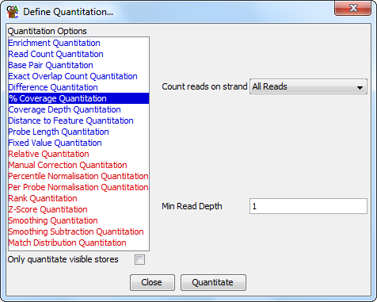

The percent coverage quantitation tells you how much of each probe is covered by a read. It doesn't matter what the coverage depth is over the parts which are covered just how much consensus sequence could be gathered.
This kind of quantation might be useful for datasets with a high level of coverage where you are looking for regions which either couldn't be mapped to uniquely, or which may have been deleted and therefore are not represented in any data.

The options you have for this module are: